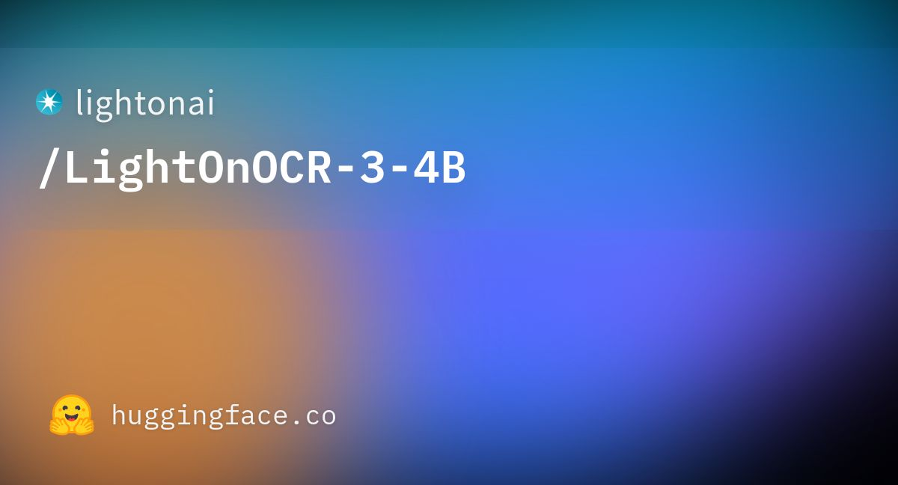
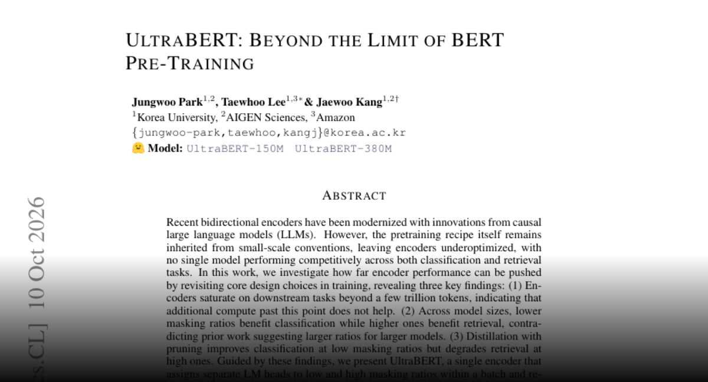
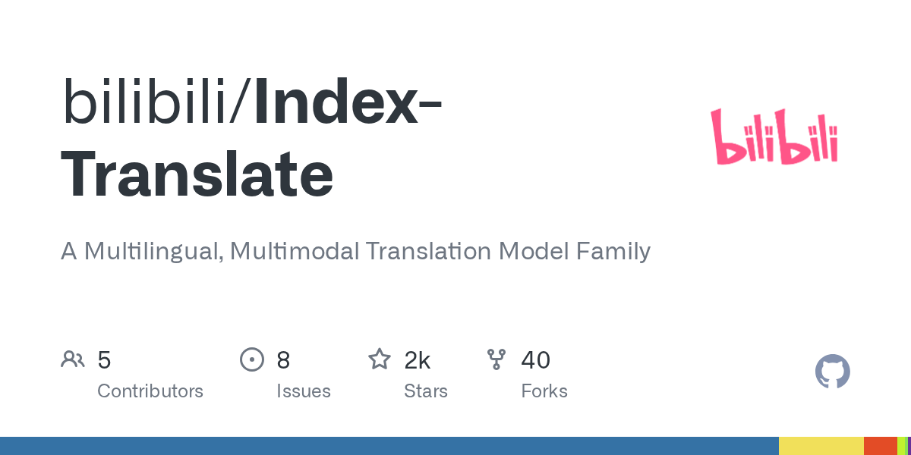
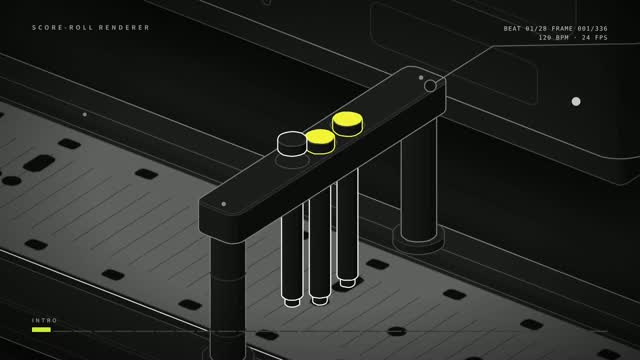
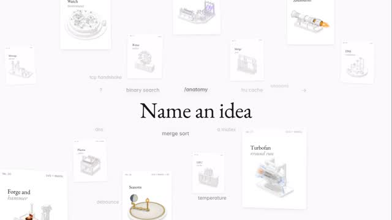
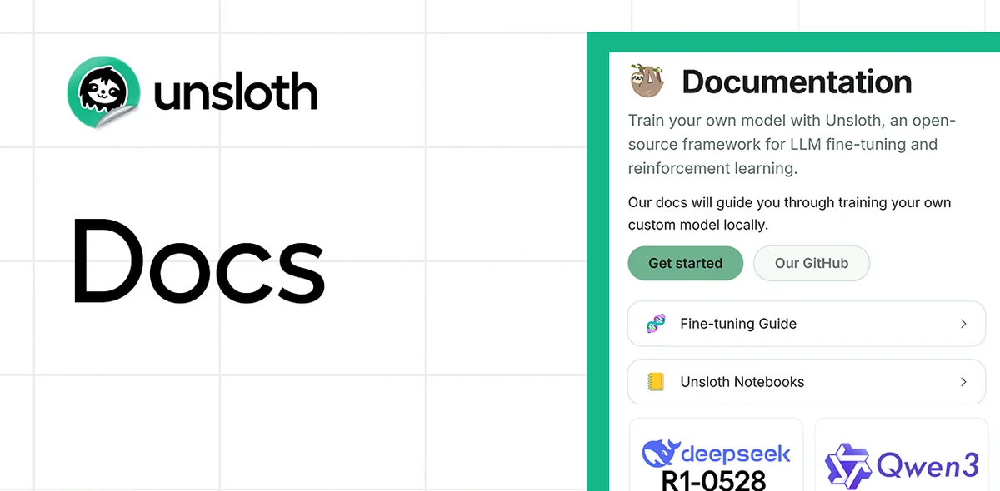
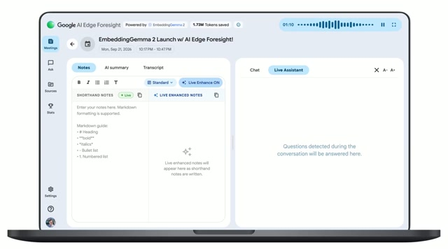
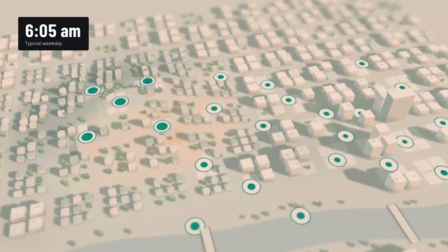
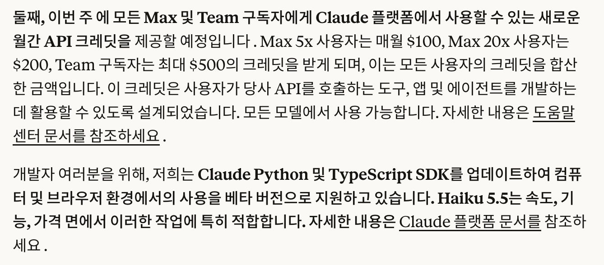

CLAUDE’S PICK


LightOnOCR-3-4B: 고성능 OCR 및 레이아웃 추출 통합 모델

문서 이미지에서 텍스트와 레이아웃을 정확히 추출해야 하는 OCR 작업에서 별도의 모델이 필요했던 문제를 해결한다. LightOnAI의 LightOnOCR-3-4B는 이미지-텍스트-텍스트 태스크에 최적화된 경량 멀티모달 모델로, 고성능 광학 문자 인식과 문서 레이아웃 이해를 단일 모델에서 실현한다. Hugging Face 오픈소스 생태계를 통해 누구나 손쉽게 접근하고 활용할 수 있도록 공개되었다.
핵심 포인트: 핵심 기여: 34억 개 파라미터의 경량 모델로 고성능 OCR과 문서 이해 작업을 단일화하였으며, Transformers 라이브러리와 Safetensors 형식으로 제공되어 배포 용이성을 극대화했다.
🔗 huggingface.co/lightonai/LightOnOCR-3-4B
기타 (Others)


docker-agent: Docker 엔진 기반 AI 에이전트 빌드 및 런타임 플랫폼
복잡한 문제를 협력하여 해결하는 AI 에이전트를 구축하고 실행할 때 코드 작성의 복잡성과 다양한 AI 모델 및 도구 통합의 어려움이 발생한다. docker-agent는 YAML 기반 선언적 설정으로 에이전트를 정의하고, 다중 에이전트 아키텍처와 MCP 기반 풍부한 도구 생태계를 통해 OpenAI, Anthropic, Gemini 등 주요 AI 제공자를 지원하며, Docker 환경에서 에이전트를 패키징하고 배포할 수 있게 한다.
핵심 포인트: 핵심 기여: YAML 기반 코드 없는 에이전트 구성, OpenAI/Anthropic/Gemini/AWS Bedrock 등 다중 AI 제공자 지원, MCP 기반 로컬/원격/Docker 도구 통합, OCI 레지스트리 기반 에이전트 패키징 및 공유, 고급 추론 및 RAG 기능 내장.
🔗 github.com/docker/docker-agent
기타 (Others)
SearchJev — 검색 에이전트를 위한 고속 보정형 System-1 모델
검색 에이전트는 관련성 판단, 증거 충분성 확인, 링크 선택 등 빈번한 의사결정을 수행하는데, 매번 대규모 언어모델을 호출하면 지연시간이 증가하고 신뢰도가 낮아진다. SearchJev는 System-1으로 작동하며 각 선택지를 직접 평가하고 보정된 확률을 반환하고, 높은 확신도의 결정은 자체에서 처리하고 불확실한 경우만 System-2에 위임한다. 이를 통해 의사결정 속도를 5배 이상 단축하면서 보정 오차를 크게 줄이고 검색 정확도를 향상시킨다.
핵심 포인트: 핵심 성과: SearchDecision-Bench에서 5.2-5.3배 빠른 의사결정과 41-74% 낮은 보정 오차 달성, BrowseComp-Plus에서 3.7-4.7배 빠른 검색으로 정확도를 45%에서 54%로 상향. SearchJev-0.8B 모델은 SearchJev-4B 성능(54%)과 유사하면서 검색 시간 15% 단축.
🔗 linkedin.com/posts/yougang-lyu-05693732a…
기타 (Others)
AI & RESEARCH
REMORY: 장기 에이전트 위한 잔차 메모리 기반 문맥 압축
장기 에이전트는 유한한 문맥 윈도우 내에서 작동하기 위해 과거 이력을 압축하는데, 텍스트 요약만으로는 모든 후속 결정을 지원하기 어렵다. REMORY는 요약에 소프트 메모리 토큰 시퀀스를 추가하는 신경망 기반 메모리 네트워크를 제안한다. 동결된 LLM이 전체 이력으로 생성할 수 있는 결과를 근사하도록 학습된 메모리 토큰을 요약 뒤에 붙여 시퀀스 차원의 잔차 연결을 구현한다.
핵심 포인트: 핵심 성과: 입력 위치의 5.2%만 사용하면서 전체 문맥의 성능에 근접하며, Qwen3.8-27B와 GLM-5.3-Flash에서 일관된 성능 향상을 달성. 반복적 도구 출력과 도구 오류를 BrowseComp와 Terminal-Bench 2.1에서 상당히 감소.
논문 (Papers)
UltraBERT: 32K 컨텍스트 지원하는 차세대 인코더 모델

기존 BERT 모델은 마스킹 비율에 따라 분류와 검색 성능이 상충되는 문제가 있었다. UltraBERT는 사전 학습 레시피를 현대화하여 마스킹 비율 최적화를 통해 분류와 검색 작업에서 모두 경쟁력 있는 성능을 달성하면서 32K 토큰까지의 긴 컨텍스트를 지원한다. 임베딩 생성과 대규모 텍스트 처리 작업에서 효율적인 성능을 제공하는 모델을 찾는 사용자에게 적합한 선택지를 제시한다.
핵심 포인트: 핵심 기여: 인코더 모델이 분류와 검색 작업 모두에서 최적 성능을 달성할 수 있음을 입증하였으며, 마스킹 비율에 따른 작업별 성능 차이를 분석하여 효과적인 사전 학습 방식을 제시했다. 32K 컨텍스트 윈도우 지원으로 장문 텍스트 처리 능력을 확장했다.
🔗 huggingface.co/papers/2610.15028
기타 (Others)
GLM-Legal — Z.ai의 법률 특화 경량 모델, Harvey LAB 벤치마크 19.2% 달성
법률 업무에서 계약서 검토, 소송 증거 분석, 규제 준수 조사 같은 복잡한 과제를 수행해야 하는 문제를 해결하기 위해 Z.ai가 GLM-Legal을 공개했다. GLM-5.3-Flash 기반 18B 경량 모델에 법률 학습과 강화학습을 결합하여 실제 로펌 워크플로를 평가하는 Harvey LAB 벤치마크에서 기반 모델의 6.7%에서 19.2%로 12.5포인트 향상시켰으며, 동시 평가 대상 Kimi K3(12.9%), Claude Fable 5(11.3%)를 상회한다.
핵심 포인트: 핵심 성과: Harvey LAB 전체 통과율 19.2%로 기반 모델 대비 12.5포인트 향상, 개별 채점 항목 92.5% 통과율 달성, 전체 79개 모델 중 7위 기록. 베타 API 형태로 로펌, 법률 기술 기업, 사내 법무팀 대상 접수 중이며 데스크톱 에이전트 플랫폼에도 통합 예정.
기타 (Others)
LoGRA: 저랭크 그래디언트로 LLM 강화학습 메모리 45% 절감
대형 언어모델의 강화학습 훈련 시 GPU 메모리 부족으로 인한 학습 제약을 해결하는 기법. 엔비디아의 LoGRA는 그래디언트를 저랭크 스케치로 압축하고 예측 KL 스텝 제어를 결합하여, 7B 모델 기준 GPU 메모리를 45.7% 감소시키고 기존에 OOM이 발생하던 27B 모델의 학습까지 가능하게 한다. 성능 저하 없이 대형 모델 강화학습의 계산 비용을 획기적으로 낮춘다.
핵심 포인트: 핵심 성과: 7B 모델 GPU 메모리 45.7% 감소, 27B 모델 학습 가능화, 저랭크 그래디언트 스케치와 예측 KL 제어로 성능 유지하며 메모리 효율성 극대화
논문 (Papers)
Document Parser 평가: 테이블·차트·시맨틱 포맷팅 검증
문서 파싱 성능을 객관적으로 평가할 수 있는 종합적 기준이 부족한 상황에서, 이 평가 프레임워크는 테이블 인식, 차트 이해, 콘텐츠 충실도, 시맨틱 포맷팅, 시각적 접지(visual grounding) 등 다섯 가지 핵심 영역을 통해 파서의 실제 작동 성능을 측정한다. 이를 통해 파싱 도구의 강점과 약점을 체계적으로 파악하고 선택 기준을 제시한다.
핵심 포인트: 핵심 기여: 테이블, 차트, 콘텐츠 정확성, 포맷팅 보존, 시각 요소 이해 등 5개 핵심 평가 항목으로 문서 파서 성능을 객관적이고 종합적으로 검증할 수 있는 평가 체계 제공.
기타 (Others)
Perplexity — 멀티모달 임베딩 모델 pplx-embed-v2-late 공개
기존 임베딩 모델들은 긴 문서를 작은 조각으로 분할하여 개별 처리하므로 문맥 손실로 검색 정확도가 낮은 문제가 있다. Perplexity의 새로운 임베딩 모델 pplx-embed-v2-late는 토큰별 정보를 유지하여 문서 전체의 맥락을 보존하고, 텍스트와 이미지, PDF를 함께 검색할 수 있으며, OCR 없이 표와 그림 같은 레이아웃 정보도 활용한다. 0.6B와 9B 모델이 동일한 임베딩 공간을 공유하여 유연한 검색 구성이 가능하며, 모두 MIT 라이선스로 Hugging Face에서 제공된다.
핵심 포인트: 핵심 성과: 토큰별 정보 유지로 긴 문서 검색 정확도 향상, 텍스트·이미지·PDF 멀티모달 검색 지원, 0.6B와 9B 모델의 통일된 임베딩 공간으로 인덱싱과 검색 속도 최적화 가능.
🔗 perplexity.ai/hub/blog/multimodal-embeddi…
기타 (Others)
PyMuPDF vs Docling — PDF 문서 파싱 성능 객관적 벤치마크
RAG 및 LLM 파이프라인에서 PDF 문서 파싱의 정확성과 속도를 선택하는 문제를 해결하기 위해 이파피루스와 Artifex가 LlamaIndex의 공개 벤치마크 ParseBench를 활용해 PyMuPDF와 Docling을 객관적으로 비교 평가했다. PyMuPDF는 페이지당 0.47초 처리 속도와 278MB 설치 용량으로 프로덕션 배포에 우수하고 종합 품질 53.6점을 기록했으며, Docling은 1.6GB 용량에 11초 처리 시간이 소요되지만 비주얼 그라운딩에서 65.6점으로 더 높은 성과를 보였다.
핵심 포인트: 핵심 성과: PyMuPDF는 Docling 대비 23배 빠른 처리 속도(0.47초 vs 11초)와 5.75배 가벼운 설치 용량(278MB vs 1.6GB)을 달성했으며, 경쟁사 벤치마크를 사용해 편향 없는 객관적 평가를 제공했다.
🔗 discuss.pytorch.kr/t/pymupdf-vs-docling/1…
기타 (Others)
Index-Translate — 150개 언어 지원하는 Qwen 기반 오픈소스 번역 LLM

다국어 번역 작업에서 오픈소스 LLM의 선택지가 부족한 문제를 해결하기 위해 Bilibili의 IndexTeam이 Qwen3.5 기반 번역 LLM 패밀리를 공개했다. 2B, 9B, 35B 규모의 모델을 제공하며 용어, 서식, 내용 보존을 세밀하게 제어할 수 있다. 음성-자막 생성, 음성 더빙, 음절 수 맞춤 번역, 장문 문서 번역 등 다양한 파생 모델을 포함하며 OpenAI 호환 무료 API와 llama.cpp, vLLM 양자화 빌드를 함께 제공한다.
핵심 포인트: 핵심 성과: 150개 언어 지원, 2B부터 35B까지 다양한 모델 크기 제공, 음성-자막, 더빙, 음절 맞춤, 장문 번역 등 4가지 특화 모델 보유, 무료 OpenAI 호환 API 제공으로 진입 장벽 제거
🔗 github.com/bilibili/Index-Translate
GitHub
Claude Haiku 5.5 — 앤트로픽의 가장 저렴하고 빠른 소형 AI 모델 공개
고비용 대비 성능이 중요한 작업에서 소형 언어모델의 효율성 문제를 해결하기 위해 앤트로픽이 Claude Haiku 5.5를 출시했다. 이전 세대 대비 75% 저렴한 가격으로 요약, 데이터베이스 조회, 분류 등 대량의 반복 작업과 실시간 고객 상담, 브라우저 자동화에 최적화되어 있다. 컴퓨터 사용 능력은 Haiku 4.5의 15.7%에서 72%로 대폭 향상되었으며, 100만 토큰 컨텍스트 윈도우와 이미지 입력을 지원한다.
핵심 포인트: 핵심 성과: 가격 75% 감소, OSWorld 2.1 벤치마크에서 컴퓨터 사용 능력 15.7%에서 72%로 향상, 역대 가장 빠른 추론 속도로 실시간 작업 대응 가능.
🔗 anthropic.com/claude-haiku-5-5
기타 (Others)
DEVTOOLS & OPEN SOURCE
Anatomy — 복잡한 개념을 동작하는 기계로 시각화하는 Claude 스킬

기술 개념을 설명할 때 추상적 텍스트만으로는 이해하기 어려운 문제가 있다. Anatomy는 Claude Code 스킬로, 사용자의 한 줄 질문을 받아 그 개념을 실제로 동작하는 기계 형태의 인터랙티브 3D 그래픽으로 변환한다. 캐시를 자물쇠로, 해시맵을 분류 책상으로 표현하는 식으로 추상적 알고리즘을 물리적 메커니즘으로 구현하며, SVG, WebGL, 3D 기술을 활용해 클릭하고 조작할 때 실제 수치가 변하는 완전히 동작하는 시뮬레이션을 제공한다.
핵심 포인트: 핵심 성과: 공개 며칠 만에 GitHub 별 2천 개를 넘긴 무료 오픈소스로, 복잡한 컴퓨터 과학 개념을 코드 기반의 정확한 동작 모델로 변환하여 개발자의 직관적 이해를 극대화한다.
🔗 github.com/wheresryan22/anatomy
GitHub
Anatomy: 아이디어를 움직이는 기계로 그려주는 Claude 스킬

기술 개념을 설명할 때 일반적으로 사용되는 박스와 화살표 다이어그램은 부품의 존재만 보여주고 실제 동작 원리는 전달하지 못한다. Anatomy는 Claude Code용 스킬로, 사용자가 한 줄의 아이디어를 입력하면 그 개념을 구현하는 실제 기계를 발명해서 3D 등축 다이어그램으로 렌더링한다. 수십 개에서 수백 개의 정밀한 부품으로 구성된 대화형 모델을 직접 조작하고 회전시키면서 원리를 체험할 수 있으며, 모든 수치는 실제 물리 시뮬레이션에서 생성된다.
핵심 포인트: 핵심 성과: 한 줄의 명령어로 SVG, WebGL, React 컴포넌트 형태의 대화형 기계 다이어그램 생성 가능하며, MIT 라이선스로 블로그, 기술 문서, 랜딩 페이지에 자유롭게 활용 가능. 33개의 실제 동작하는 예제(캐시 키, GPU 컨텍스트, 타빈, 엔진 등)를 통해 복잡한 개념을 시각적·물리적으로 설명하는 새로운 방식 제시.
🔗 skills.wheresryan.sh/anatomy
기타 (Others)
Unsloth — 의사결정 모델을 일반 그래픽카드에서 직접 학습

기존의 의사결정 모델은 API로만 활용 가능했지만, Unsloth의 오픈소스 학습 방법을 통해 일반 그래픽카드에서 직접 미세조정할 수 있게 되었다. Qwen3.5 0.8B를 4GB VRAM에서 학습시켜 의사결정 벤치마크 정확도를 20.7%에서 74.3%까지 향상시켰으며, 작은 모델은 2.5GB VRAM에서도 학습 가능하다. LoRA 기반 한 번의 에포크만으로도 30~37% 수준의 정확도를 78%까지 끌어올릴 수 있어 비용 효율적인 의사결정 모델 구축을 가능하게 한다.
핵심 포인트: 핵심 성과: Qwen3.5 0.8B 모델을 4GB VRAM에서 학습해 정확도를 74.3%까지 달성했으며, LoRA 미세조정으로 벤치마크 정확도를 30~37%에서 78%까지 개선. TypeSafe 호환 API와 웹 인터페이스 공개로 자체 서버에서 실행 및 업무 데이터 기반 미세조정 지원.
🔗 unsloth.ai/docs/basics/train-your-own-dec…
기타 (Others)
ENGINEERING
Scion — 앤트로픽이 Git을 대체하기 위해 직접 개발한 버전관리 시스템
Claude의 자율적 코드 생성 능력으로 일일 머지 건수가 5월 2,500건에서 9월 30,000건 이상으로 급증하면서 Git이 기술적 병목이 되었다. 앤트로픽은 클라이언트-서버 기반의 새로운 버전관리 시스템 Scion을 5개월간 개발하여 모노레포 전체를 마이그레이션했다. Scion은 항상 온라인 상태인 에이전트 중심의 워크플로우를 가정하여 필요한 데이터만 온디맨드로 제공하고, 파일 이력 조회와 머지는 모두 서버가 처리함으로써 일일 600PB를 초과하던 Git 트래픽 문제를 해결했다.
핵심 포인트: 핵심 성과: 엔지니어 7명이 5개월 만에 Scion 구축 및 모노레포 완전 마이그레이션 완료, 동시에 코드 리뷰 도구 Antique와 코드 검색·권한 관리 시스템도 함께 개발했으며, 메인 브랜치 100GB 저장소에서 발생하던 일일 600PB의 Git 트래픽 문제를 근본적으로 해결.
🔗 anthropic.com/engineering/redesigning-sou…
기타 (Others)
PRODUCT & INDUSTRY
Google AI Edge Foresight — 온디바이스 AI 회의록 자동 생성

유료 AI 회의록 서비스의 시장을 위협하는 구글의 무료 도구가 등장했다. Google AI Edge Foresight는 Gemma 4와 EmbeddingGemma 2를 활용하여 회의 음성을 자동으로 기록하고 텍스트로 변환하며 핵심 내용을 정리한다. 클라우드 업로드 없이 맥에서 직접 처리하는 온디바이스 방식으로 프라이버시를 보호하면서, 저장된 문서와 회의록을 바탕으로 질문에 답하는 기능도 제공한다.
핵심 포인트: 핵심 성과: 음성 녹음, 문자 변환, 핵심 정리를 모두 온디바이스에서 처리하여 클라우드 의존성 제거 및 프라이버시 보장. 무료 서비스로 기존 유료 AI 회의록 서비스 업체들에 직접적인 시장 위협 요인.
🔗 developers.google.com/edge/foresight
기타 (Others)
Claude Dashboards & Motion — AI로 실시간 대시보드와 애니메이션 자동 생성

데이터 분석과 프레젠테이션 제작에서 수작업과 대기 시간이 발생하는 문제를 해결하는 Claude의 새로운 기능. Claude Dashboards는 BigQuery, Databricks, Snowflake 등 데이터 플랫폼이나 Salesforce 같은 CRM 도구를 연결하면 자연어 질문만으로 실시간 대시보드를 생성하고 데이터 변화에 따라 자동 갱신한다. Claude Motion은 코드 기반으로 보고서나 차트를 애니메이션으로 제작해 MP4로 내보내며, 영상 생성 모델이 아닌 코드 방식이므로 숫자와 텍스트 수정이 자유롭다.
핵심 포인트: 핵심 기여: Dashboards는 유료 요금제에서, Motion은 Team·Enterprise 플랜에서 베타 제공되며, 데이터 기반 의사결정과 시각적 커뮤니케이션의 생산성을 획기적으로 개선한다.
🔗 claude.com/ko/resources/articles/dashboar…
기타 (Others)
OpenAI GPT-6: Intelligent UI로 12억 사용자 경험 혁신
ChatGPT 사용자들이 단순 텍스트 답변에만 의존할 때 발생하는 정보 전달의 비효율성을 해결하기 위해 OpenAI가 GPT-6와 Intelligent UI를 공개했다. 이 기능은 텍스트, 이미지, 상호작용 요소를 동적으로 조합하여 질문의 특성에 맞는 최적의 UI를 자동 구성하고, 답변 생성 중간부터 화면을 표시해 사용자 경험을 개선한다. genUI 문법 기반의 네이티브 컴포넌트 라이브러리를 활용해 매번 HTML을 새로 작성하지 않으면서도 인터랙티브 도표, 계산기, 무드보드 등 다양한 UI를 자동 생성한다.
핵심 포인트: 핵심 성과: GPT-6 Sol과 Luna 모델이 매주 12억 명 이상의 ChatGPT 사용자에게 순차 배포되며, 기존 GPT-5.6 대비 요리 메뉴 추천 시 상호작용 계산기 자동 생성, 별자리 시각화, 마작 규칙 학습 등 복잡한 작업을 비주얼 인터페이스로 즉시 실행 가능하게 변환한다.
🔗 openai.com/index/gpt-6-for-everyone/
기타 (Others)
Anthropic — Claude Haiku 5.5 공개 및 MAX 사용자 무료 API 크레딧 제공

Anthropic이 Claude Haiku 5.5를 새로 공개하고 Claude MAX 구독자를 대상으로 매달 무료 API 크레딧을 제공하기 시작했다. 이는 API 사용자들의 접근성을 높이고 Claude 모델 활용을 더욱 장려하기 위한 정책으로, 프리미엄 구독자들이 추가 비용 없이 API 기능을 체험할 수 있게 한다.
핵심 포인트: 핵심 성과: Claude Haiku 5.5 모델 출시로 성능을 개선했으며, MAX 사용자에게 월간 무료 API 크레딧을 제공하여 구독자 가치를 극대화했다.
🔗 threads.com/@choi.openai/post/DeNLlYuE8dK…
기타 (Others)